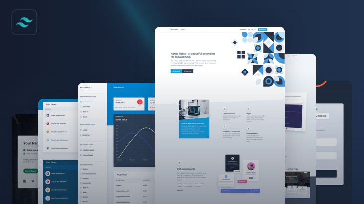
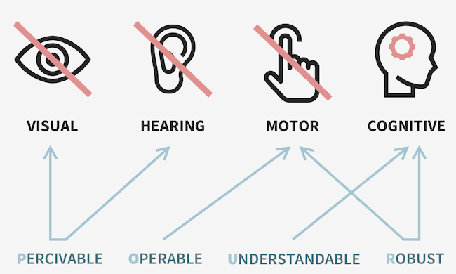

Diseño Responsivo
El diseño responsivo es una técnica fundamental en el desarrollo web moderno, que permite a las aplicaciones y sitios web adaptarse a una amplia variedad de tamaños de pantalla y dispositivos. Esto es esencial para proporcionar una experiencia de usuario consistente y optimizada en cualquier plataforma, ya sea en un dispositivo móvil, una tableta, o una computadora de escritorio. Aprender más sobre diseño responsivo.
Uno de los principios básicos del diseño responsivo es el uso de grillas fluidas, donde los anchos de los elementos se definen en porcentajes en lugar de unidades fijas. Este enfoque permite que los elementos de la interfaz se ajusten dinámicamente al tamaño de la pantalla, manteniendo una disposición equilibrada sin importar el dispositivo. Además, las media queries son herramientas clave en el diseño responsivo, ya que permiten aplicar diferentes estilos CSS en función de las características específicas del dispositivo, como el ancho de la pantalla, la orientación o la resolución.
Otro aspecto crucial del diseño responsivo es el manejo de imágenes adaptativas. Utilizar imágenes que se ajusten al tamaño de la pantalla, junto con técnicas como el lazy loading y el uso de formatos de imagen optimizados, no solo mejora el rendimiento del sitio al reducir los tiempos de carga, sino que también garantiza una experiencia visual coherente en todos los dispositivos.
Beneficios del Diseño Responsivo
El diseño responsivo ofrece varios beneficios clave. En primer lugar, mejora la experiencia del usuario al proporcionar una navegación fluida y consistente en todos los dispositivos, lo que es crucial en un mundo donde el acceso móvil es predominante. Además, el diseño responsivo es beneficioso para el SEO, ya que Google favorece los sitios web optimizados para dispositivos móviles en sus resultados de búsqueda, lo que puede mejorar significativamente la visibilidad del sitio. También, un sitio web responsivo reduce los costos de desarrollo y mantenimiento, ya que elimina la necesidad de crear y gestionar múltiples versiones de la misma aplicación para diferentes dispositivos.
Accesibilidad Web
La accesibilidad web es la práctica de diseñar sitios y aplicaciones que sean utilizables por todas las personas, incluidas aquellas con discapacidades. Esto es esencial para garantizar que todos los usuarios, independientemente de sus habilidades, puedan acceder a la información y a los servicios en línea de manera efectiva. La accesibilidad no solo es un compromiso ético, sino también una práctica que mejora la usabilidad general del sitio, beneficiando a todos los usuarios. Conoce más sobre la accesibilidad web.
Uno de los principios fundamentales de la accesibilidad es el uso de texto alternativo para imágenes y otros elementos no textuales. Esto permite que los usuarios con discapacidades visuales comprendan el contenido mediante el uso de tecnologías asistivas, como lectores de pantalla. Además, la navegación por teclado es esencial para aquellos que no pueden utilizar un mouse, asegurando que todos los elementos de la interfaz sean accesibles mediante teclas de navegación estándar.
Otro aspecto crítico es el contraste adecuado entre el texto y el fondo, lo que garantiza que el contenido sea legible para personas con discapacidades visuales, como el daltonismo. La utilización de combinaciones de colores con suficiente contraste es una práctica clave para mejorar la accesibilidad visual. Además, una estructura semántica adecuada en el código HTML ayuda a los lectores de pantalla a interpretar correctamente el contenido, facilitando la navegación y comprensión del sitio por parte de usuarios con discapacidades.
Beneficios de la Accesibilidad Web
La accesibilidad web no solo es un mandato moral y legal en muchos países, sino que también ofrece varios beneficios tangibles. La inclusión es el beneficio más obvio, ya que permite que todas las personas, independientemente de sus habilidades, accedan a la información y a los servicios en línea. Además, las prácticas de accesibilidad a menudo mejoran la usabilidad general del sitio, lo que puede beneficiar a todos los usuarios, no solo a aquellos con discapacidades. Por último, cumplir con las normativas de accesibilidad puede ayudar a evitar problemas legales y mejorar la reputación de la marca, demostrando un compromiso con la responsabilidad social y la inclusión.